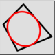
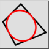
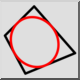
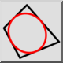

Inscrita en el cuadrilátero
Barra de herramienta / icono:
 

Menú: Dibujar > Elipse > Inscrita en el cuadrilátero
Acceso directo: E, Q
Comandos: ellipseinscribedquad | eq
Esta es una traducción automática.
Barra de herramienta / icono:
 

Menú: Dibujar > Elipse > Inscrita en el cuadrilátero
Acceso directo: E, Q
Comandos: ellipseinscribedquad | eq
Dibuja una elipse que está inscrita en un cuadrilátero.